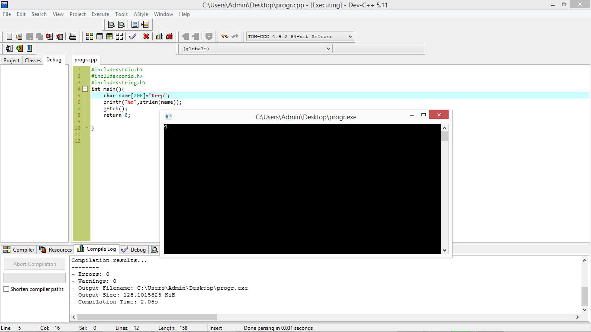

Introduction to string
Strings are groupings of letters, numbers, and many other characters.
String in C is dtored in single dimension character array.
| String name | Uses |
| strlen(s); | It is used to get the length of string. |
| strcpy(S1,S2); | It is used to copy thr string here string S1 and copied into string S2. |
| strcat(S1,S2); | It is used to add two string here string S2 concatenates at the end of string S1 |
| strcmp(S1,S2); | It is used to compare two string. Returns 0 if string S1 and string S2 are same. returns negative value if S1 lesser than S2. This string returns positive value if S1>S2. |
| strrev(s); | It is used to reverse the string |
| strupr(s); | It is used to convert all the character into upper alphabet. |
| strlwr(s); | It is used to convert all the character into lowe alphabet. |
| strcmpi(S1,S2); | It is also used to compare two string but it ignore the case sensitivity means 'a' and 'A' are treated as same |
Example of strlen(S)
It will show you 4 character of keep